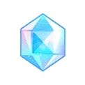
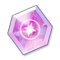
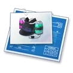
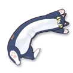

TOOLS
ブルアカの計算を、ブラウザだけで。
育成の見通し、募集の天井、対抗戦の順位、装備の周回。手が止まりがちな計算をまとめてあります。登録も入力の送信も要りません。
TOOLS
育成の見通し、募集の天井、対抗戦の順位、装備の周回。手が止まりがちな計算をまとめてあります。登録も入力の送信も要りません。
目標のレベルまで、あと何 AP・何日かかるかを出します。レベルアップのたびに AP が全回復するぶんも差し引いています。
つかう
今の青輝石でピックアップをお迎えできる確率と、天井までに要る石を出します。呼び出しチャージの 100 / 200 カウントと募集回数特典を織り込んだ値です。
つかう今の順位から 1 位まで、あと何回勝てばいいか。挑戦できる相手の範囲をそのまま辿るので、11 位から 10 位へ挑めない段差も込みです。
つかう
順位帯と買うものから、コインが 1 日でどれだけ増減するかを出します。防衛勝利のぶんも数えます。
つかう手持ちのレポート・強化珠・クレジットがそれぞれ何人ぶんかを数えて、今日はどちらを回るべきかを決めます。
つかう
目標の Tier まで要る設計図とクレジットを出して、足りないぶんを埋めるのにいちばん効率のいい任務を AP あたりで並べます。万能設計図（T◯装備設計図選択ボックス）も差し引けます。
つかう
生徒を選ぶと顔と一緒に、その子に効く贈り物と絆経験値が出ます。目標のランクまで何個・何日かかるかも。
つかうミニゲーム「宝探し（在庫管理）」で、開けた結果を入れると残りのマスに何がある確率かが出ます。置き方を全部数え上げた値です。
つかう生徒 194 人を並べて自分の Tier 表を作れます。画像として保存でき、URL をそのまま渡せば相手にも同じ並びが出ます。
つかう総力戦・大決戦のボーダー、カフェの家具配置あたりを順に作っています。ほしいものがあれば @0r.not まで。
計算はできるかぎりブラウザの中だけでやっています。入力した数字が外に出ることはありません。 ただ、ブラウザだけでは作れないもの——他の先生の記録を集めるもの、重い探索、外から取り続けないと成り立たないもの——は、そのぶんだけ裏で用意します。 どちらで動いているかは各ツールに書いてあります。
数字の出どころは各ツールの下に書いてあります。ゲームのデータから取った値か、攻略サイトの記載か、目安として置いた値かを分けて書いています。おかしいところがあれば @0r.not まで教えてください。